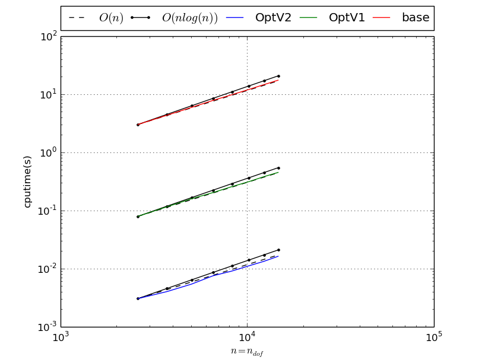
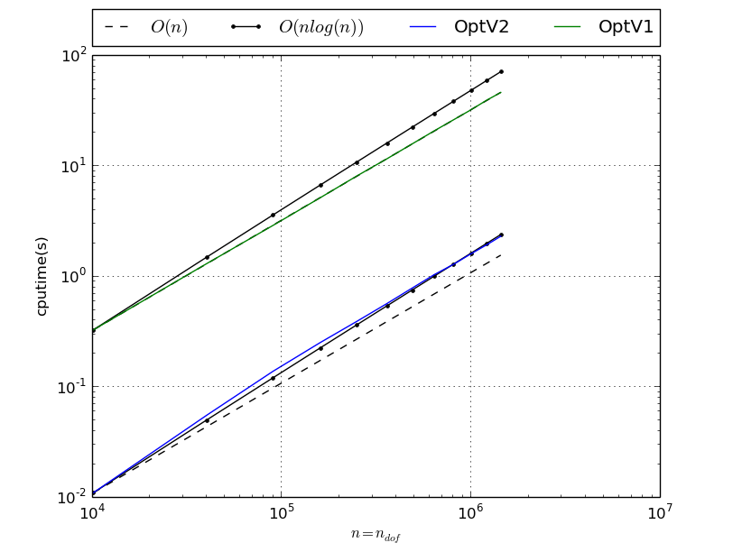
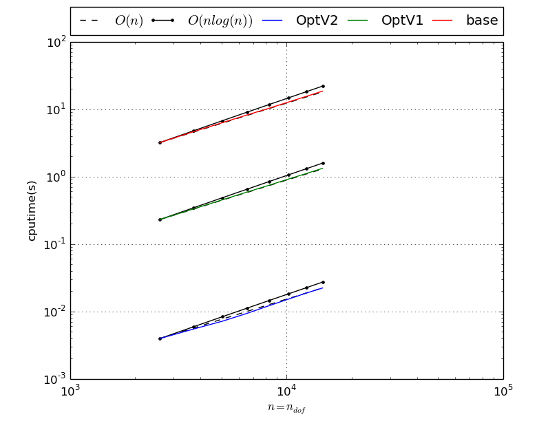
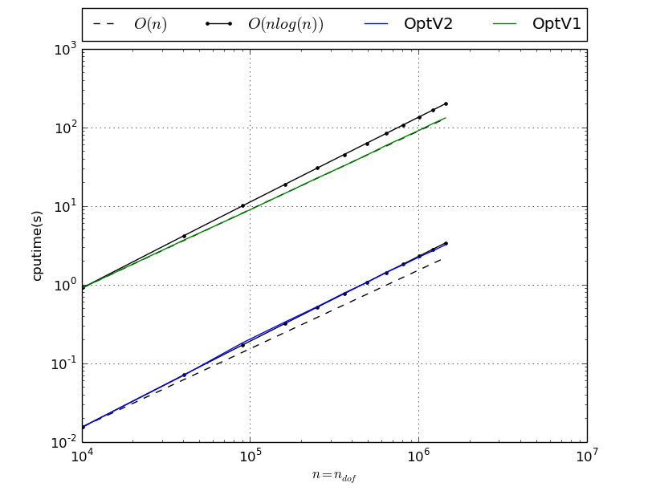
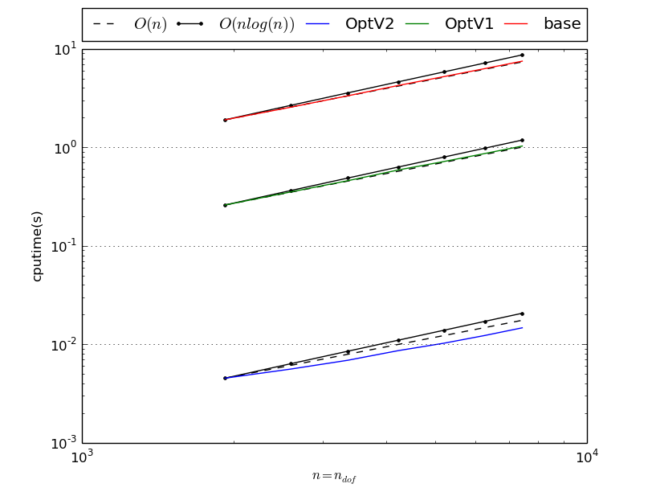
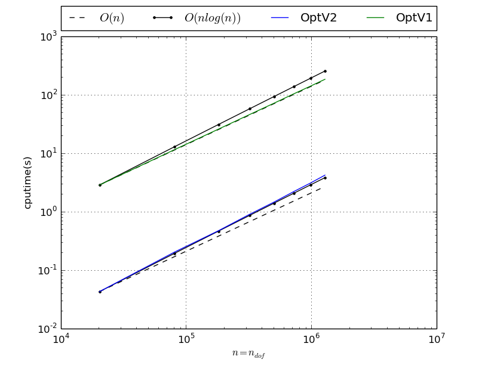

2D benchmarks¶
Benchmark usage¶
- pyOptFEM.FEM2D.assemblyBench.assemblyBench([assembly=<string>, version=<string>, LN=<array>, meshname=<string>, meshdir=<string>, nbruns=<int>, la=<float>, mu=<float>, Num=<int>, tag=<string>, ...])
Benchmark code for
 -Lagrange finite element matrices defined in FEM2D.
-Lagrange finite element matrices defined in FEM2D.Parameters: - assembly –
Name of an assembly routine. The string should be :
- ‘MassAssembling2DP1’,
- ‘StiffAssembling2DP1’ (default)
- ‘StiffElasAssembling2DP1’
- versions – List of versions. Must be a list of any size whose elements may be {‘base’,’OptV1’,’OptV2’} (default : ['OptV2','OptV1','base'])
- meshname – Name of the mesh files. By default it is an empty string ‘’. It means it uses SquareMesh function to generate meshes.
- meshdir – Directory location of FreeFEM++ mesh files. Used if meshname is not empty.
- LN –
array of integer values. <LN> contains the values of N. Used to generate meshes data via Th=SquareMesh(N) function if meshname is empty or via getMesh class to read FreeFEM++ meshes Th=getMesh(meshdir+’/’+meshname+str(N)+’.msh’)
LN default value is range(50, 90, 10)
- nbruns – Number of runs on each mesh (default : 1)
- save – For saving benchmark results in a file (see parameters <output>, <outdir> and <tag>)
- plot – For plotting computation times (default : True)
- output – Name used to set results file name (default : ‘bench2D’)
- outdir – Directory location of saved results file name (default : ‘./results’).
- tag – Specify a tag string added to filename
- la – the first Lame coefficient in Hooke’s law, denoted by
 . Used by functions for assembling the elastic stiffness matrix.
(default : 2)
. Used by functions for assembling the elastic stiffness matrix.
(default : 2) - mu – the second Lame coefficient in Hooke’s law, denoted by
 . Used by functions for assembling the elastic stiffness matrix.
(default : 0.3)
. Used by functions for assembling the elastic stiffness matrix.
(default : 0.3) - Num – Numbering choice. Used by functions for assembling the elastic stiffness matrix. (default : 0)
- assembly –
Mass Matrix¶
Benchmark of MassAssembling2DP1 with base, OptV1 and OptV2 versions (see Mass Matrix)
MassAssembling2DP1 benchmark summary N nq ndof OptV2 OptV1 base 50 2601 2601 0.0042(s) 0.0816(s) 3.2783(s) x1.00 x19.50 x783.85 60 3721 3721 0.0058(s) 0.1162(s) 4.7136(s) x1.00 x20.02 x812.43 70 5041 5041 0.0078(s) 0.1584(s) 6.3931(s) x1.00 x20.32 x819.97 80 6561 6561 0.0102(s) 0.2075(s) 8.4154(s) x1.00 x20.33 x824.26 90 8281 8281 0.0133(s) 0.2622(s) 10.6460(s) x1.00 x19.66 x798.28 100 10201 10201 0.0162(s) 0.3228(s) 13.1028(s) x1.00 x19.89 x807.38 110 12321 12321 0.0197(s) 0.3912(s) 15.9244(s) x1.00 x19.88 x809.23 120 14641 14641 0.0232(s) 0.4685(s) 18.9165(s) x1.00 x20.21 x816.09 This tabular was built with the following code :
>>> from pyOptFEM.FEM2D import assemblyBench >>> assemblyBench(assembly='MassAssembling2DP1',LN=range(50,130,10)) SquareMesh(50): -> MassAssembling2DP1OptV2(nq=2601, nme=5000) run ( 1/ 1) : cputime=0.004182(s) - matrix 2601-by-2601 ... SquareMesh(120): -> MassAssembling2DP1base(nq=14641, nme=28800) run ( 1/ 1) : cputime=18.916504(s) - matrix 14641-by-14641 ...
We also obtain
Figure 31: MassAssembling2DP1 benchmark
Benchmark of MassAssembling2DP1 with OptV2 and OptV1 versions
MassAssembling2DP1 benchmark summary N nq ndof OptV2 OptV1 100 10201 10201 0.0163(s) 0.3196(s) x1.00 x19.61 200 40401 40401 0.0648(s) 1.3025(s) x1.00 x20.09 300 90601 90601 0.1583(s) 2.9198(s) x1.00 x18.45 400 160801 160801 0.2859(s) 5.1809(s) x1.00 x18.12 500 251001 251001 0.4591(s) 8.1059(s) x1.00 x17.65 600 361201 361201 0.6595(s) 11.6834(s) x1.00 x17.72 700 491401 491401 0.9056(s) 15.8209(s) x1.00 x17.47 800 641601 641601 1.1796(s) 20.8883(s) x1.00 x17.71 900 811801 811801 1.4933(s) 26.0264(s) x1.00 x17.43 1000 1002001 1002001 1.8503(s) 32.5076(s) x1.00 x17.57 1100 1212201 1212201 2.2262(s) 39.3237(s) x1.00 x17.66 1200 1442401 1442401 2.6616(s) 46.6362(s) x1.00 x17.52 This tabular was built with the following code :
>>> from pyOptFEM.FEM2D import assemblyBench >>> assemblyBench(assembly='MassAssembling2DP1',versions=['OptV2','OptV1'],LN=range(100,1300,100)) SquareMesh(100): -> MassAssembling2DP1OptV2(nq=10201, nme=20000) run ( 1/ 1) : cputime=0.016294(s) - matrix 10201-by-10201 ... SquareMesh(1200): -> MassAssembling2DP1OptV1(nq=1442401, nme=2880000) run ( 1/ 1) : cputime=46.636235(s) - matrix 1442401-by-1442401 ...
We also obtain
Figure 32: MassAssembling2DP1 benchmark
Stiffness Matrix¶
Benchmark of StiffAssembling2DP1 with base, OptV1 and OptV2 versions
StiffAssembling2DP1 benchmark summary N nq ndof OptV2 OptV1 base 50 2601 2601 0.0055(s) 0.2501(s) 3.5504(s) x1.00 x45.35 x643.82 60 3721 3721 0.0076(s) 0.3593(s) 5.1301(s) x1.00 x47.38 x676.64 70 5041 5041 0.0101(s) 0.4897(s) 6.9854(s) x1.00 x48.33 x689.37 80 6561 6561 0.0138(s) 0.6362(s) 9.0807(s) x1.00 x46.11 x658.09 90 8281 8281 0.0178(s) 0.8119(s) 11.5354(s) x1.00 x45.57 x647.46 100 10201 10201 0.0223(s) 1.0005(s) 14.2190(s) x1.00 x44.77 x636.22 110 12321 12321 0.0266(s) 1.2124(s) 17.2704(s) x1.00 x45.61 x649.74 120 14641 14641 0.0325(s) 1.4503(s) 20.4368(s) x1.00 x44.69 x629.75 This tabular was built with the following code :
>>> from pyOptFEM.FEM2D import assemblyBench >>> assemblyBench(assembly='StiffAssembling2DP1',LN=range(50,130,10)) SquareMesh(50): -> StiffAssembling2DP1OptV2(nq=2601, nme=5000) run ( 1/ 1) : cputime=0.005515(s) - matrix 2601-by-2601 ... SquareMesh(120): -> StiffAssembling2DP1base(nq=14641, nme=28800) run ( 1/ 1) : cputime=20.436779(s) - matrix 14641-by-14641 ...
We also obtain
Figure 33: StiffAssembling2DP1 benchmark
Benchmark of StiffAssembling2DP1 with OptV2 and OptV1 versions
StiffAssembling2DP1 benchmark summary N nq ndof OptV2 OptV1 100 10201 10201 0.0225(s) 1.0104(s) x1.00 x44.93 200 40401 40401 0.0945(s) 4.0847(s) x1.00 x43.22 300 90601 90601 0.2379(s) 9.1818(s) x1.00 x38.59 400 160801 160801 0.4459(s) 16.3333(s) x1.00 x36.63 500 251001 251001 0.7169(s) 25.6513(s) x1.00 x35.78 600 361201 361201 1.0316(s) 36.8382(s) x1.00 x35.71 700 491401 491401 1.4316(s) 49.9507(s) x1.00 x34.89 800 641601 641601 1.8965(s) 65.8354(s) x1.00 x34.71 900 811801 811801 2.4164(s) 82.7545(s) x1.00 x34.25 1000 1002001 1002001 2.9450(s) 102.3931(s) x1.00 x34.77 1100 1212201 1212201 3.4908(s) 123.9802(s) x1.00 x35.52 1200 1442401 1442401 4.3144(s) 147.2963(s) x1.00 x34.14 This tabular was built with the following code :
>>> from pyOptFEM.FEM2D import assemblyBench >>> assemblyBench(assembly='StiffAssembling2DP1',versions=['OptV2','OptV1'],LN=range(100,1300,100)) SquareMesh(100): -> StiffAssembling2DP1OptV2(nq=10201, nme=20000) run ( 1/ 1) : cputime=0.022488(s) - matrix 10201-by-10201 ... SquareMesh(1200): -> StiffAssembling2DP1OptV1(nq=1442401, nme=2880000) run ( 1/ 1) : cputime=147.296321(s) - matrix 1442401-by-1442401 ...
We also obtain
Figure 34: StiffAssembling2DP1 benchmark
Elastic Stiffness Matrix¶
Benchmark of StiffElasAssembling2DP1 with base, OptV1 and OptV2 versions
StiffElasAssembling2DP1 benchmark summary N nq ndof OptV2 OptV1 base 30 961 1922 0.0107(s) 0.2809(s) 1.8485(s) x1.00 x26.29 x173.04 35 1296 2592 0.0134(s) 0.3807(s) 2.5109(s) x1.00 x28.37 x187.11 40 1681 3362 0.0172(s) 0.4986(s) 3.2952(s) x1.00 x28.92 x191.13 45 2116 4232 0.0216(s) 0.6306(s) 4.1589(s) x1.00 x29.26 x192.97 50 2601 5202 0.0269(s) 0.7800(s) 5.1323(s) x1.00 x29.04 x191.07 55 3136 6272 0.0322(s) 0.9453(s) 6.2180(s) x1.00 x29.39 x193.35 60 3721 7442 0.0386(s) 1.1282(s) 7.4995(s) x1.00 x29.21 x194.14 This tabular was built with the following code :
>>> from pyOptFEM.FEM2D import assemblyBench >>> assemblyBench(assembly='StiffElasAssembling2DP1',LN=range(30,65,5)) SquareMesh(30): -> StiffElasAssembling2DP1OptV2(nq=961, nme=1800) run ( 1/ 1) : cputime=0.010683(s) - matrix 1922-by-1922 ... SquareMesh(30): -> StiffElasAssembling2DP1OptV2(nq=961, nme=1800) run ( 1/ 1) : cputime=0.010683(s) - matrix 1922-by-1922 ...
We also obtain
Figure 35: StiffElasAssembling2DP1 benchmark
Benchmark of StiffElasAssembling2DP1 with OptV2 and OptV1 versions
StiffElasAssembling2DP1 benchmark summary N nq ndof OptV2 OptV1 100 10201 20402 0.1110(s) 3.1286(s) x1.00 x28.18 200 40401 80802 0.5036(s) 12.5861(s) x1.00 x24.99 300 90601 181202 1.2058(s) 28.2232(s) x1.00 x23.41 400 160801 321602 2.1346(s) 50.2407(s) x1.00 x23.54 500 251001 502002 3.5360(s) 78.4291(s) x1.00 x22.18 600 361201 722402 5.3290(s) 113.4194(s) x1.00 x21.28 700 491401 982802 7.4691(s) 153.6793(s) x1.00 x20.58 800 641601 1283202 9.8943(s) 201.4319(s) x1.00 x20.36 This tabular was built with the following code :
>>> from pyOptFEM.FEM2D import assemblyBench >>> assemblyBench(assembly='StiffElasAssembling2DP1',versions=['OptV2','OptV1'],LN=range(100,900,100)) SquareMesh(100): -> StiffElasAssembling2DP1OptV2(nq=10201, nme=20000) run ( 1/ 1) : cputime=0.111037(s) - matrix 20402-by-20402 ... SquareMesh(800): -> StiffElasAssembling2DP1OptV1(nq=641601, nme=1280000) run ( 1/ 1) : cputime=201.431866(s) - matrix 1283202-by-1283202 ...
We also obtain
Figure 36: StiffElasAssembling2DP1 benchmark

{kind=link}
{kind=link}
{kind=link}
{kind=link}
{kind=link}
{kind=link}